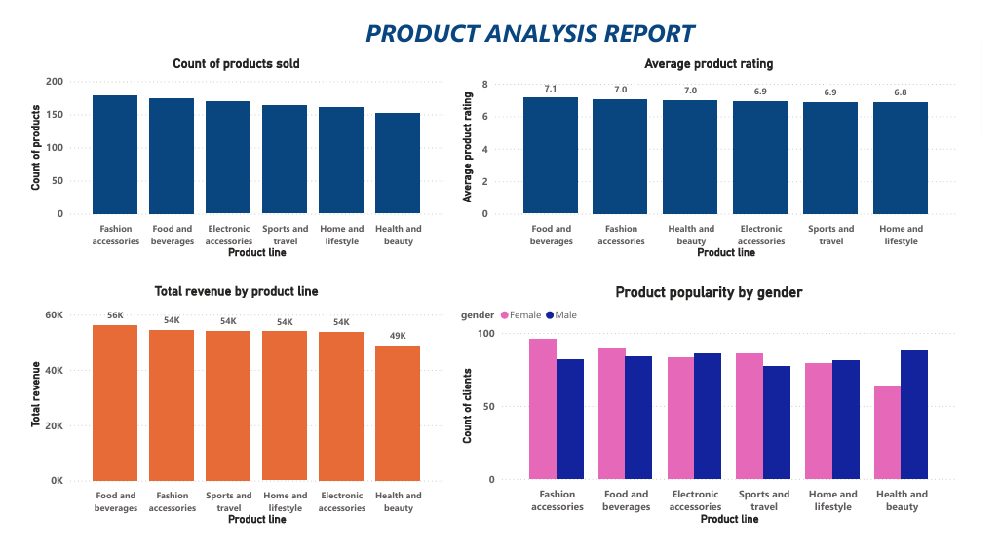

My Articles
On this page, I share my thoughts on various aspects of , and tools used in data analytics
Anything data, will be found here.

SQL Optimization
What is this, and why optimize SQL queries?
To optimize simply means make the best use of/use efficiently. In SQL optimized queries ensures reduction of execution time and resources utilized to obtain the result as quickly and efficiently as possible. This in turn enhances database performance.
Note: The aim of an efficient query is to pull only the required records from the database.
How can we optimize SQL queries? The list is endless - here are a few examples
- Clearly define and understand the business requirements
- Focus on business outcomes- query should have a definite and unique purpose
- Focus the query on tables with the correct level of detail
- Use the 5 W’s to ask the right questions- Who, What, Where, When, Why
- Use LIMIT to sample query results.In some DBMS, use TOP
- Selective Projection : SELECT fields instead of SELECT *
- Use JOINS efficiently Choose the appropriate type of join (INNER JOIN, OUTER JOIN (LEFT, RIGHT, FULL)) Note:If possible, AVOID using too many JOINS in a single query, may reduce query performance
- Use Common Table Expressions(CTEs) in place of subqueries